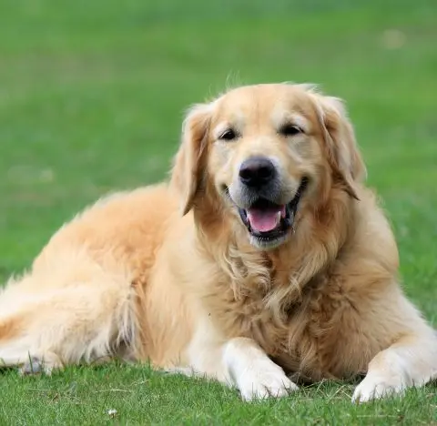

Home
Welcome to the home page of Doggo!, a website about dogs.

History of dogs
-
Origins and Domestication
-
Dogs are descendants of wolves, with DNA nearly identical to their wild ancestors. The domestication process likely began 20,000 to 40,000 years ago, when humans and wolves lived and hunted in close proximity. Some wolves were naturally less fearful of humans, and over generations, these tamer individuals were favored, gradually losing predatory traits and evolving into the first dogs. Archaeological evidence, such as the Bonn-Oberkassel dog buried with humans around 14,220 years ago, confirms early human-dog relationships.
-
Spread and Early Roles
-
By about 15,000 years ago, dogs had spread globally alongside humans. Early dogs were used for hunting, guarding, and companionship. In ancient civilizations, humans began selective breeding: Egyptians bred dogs for hunting and protection, while in China, dogs were bred to resemble lions, reflecting cultural and religious symbolism.
-
Development of Breeds
-
Over time, selective breeding produced a wide variety of dog types and purebreds. By the 18th century, purebred dogs became status symbols among wealthy households, and by the 19th century, dog shows and cross-breeding became popular, emphasizing traits like speed, strength, and sensory abilities. Specific breeds, such as sight hounds and mastiff-type dogs, were developed for hunting, guarding, and other specialized tasks
-
Dogs as Companions
-
Throughout history, dogs have transitioned from working animals to integral members of human families. Their roles expanded from hunting and guarding to companionship, therapy, and service work. Today, dogs are celebrated for their loyalty, intelligence, and emotional bonds with humans. Source
Cool facts
Dogs have incredible abilities—like up to 300 million scent receptors, unique nose prints, and even the ability to detect diseases such as cancer and diabetes.
Written by Simon Davisvisit us at:
gobbygoobers.com
call us at 012-345-6789